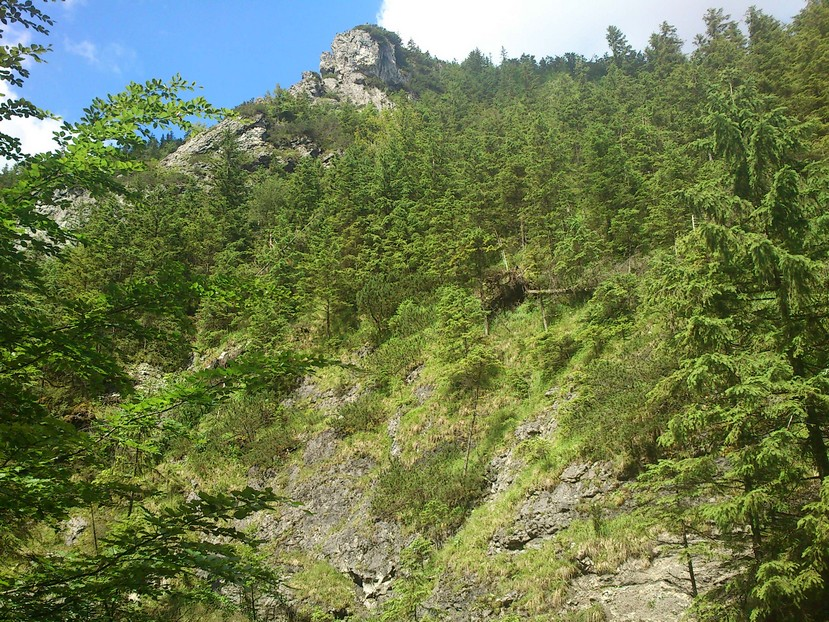

Use left/right arrows to navigate through the photos. Use escape button to close the pop-up window.
Close
Kasprowy Wierch - Hala Gąsienicowa - Czarny Staw Gąsienicowy - Dolina Jaworzynki (2016)

+
<
>